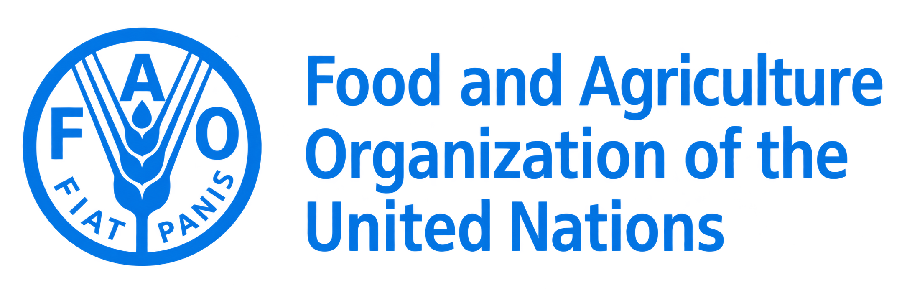

Validación técnica
Tipologías de producción de leche bovina en Colombia




Proyecto: Costo económico de reducir emisiones de metano en el sector lechero | Capítulo Colombia
Bienvenid@
Gracias por participar en este proceso de validación técnica. Seleccione el modelo productivo que corresponde a su experiencia para diligenciar el formulario asociado.
La información suministrada será utilizada exclusivamente con fines técnicos y de investigación.
Seleccione un formulario
Los formularios se abrirán en la plataforma de validación correspondiente.
Modelo 1
Producción de Leche en Sistemas Especializados de Pequeños Productores (LEPP)
Ingrese haciendo click
Iniciar formulario
Modelo 2
Producción de Leche en Sistemas Especializados de Grandes Productores (LEGP)
Ingrese haciendo click
Iniciar formulario
Modelo 3
Producción de Leche en Sistemas Doble Propósito Convencional (DPC)
Ingrese haciendo click
Iniciar formulario
Modelo 4
Producción de Leche en Sistemas Doble Propósito Especializado (DPE)
Ingrese haciendo click
Iniciar formulario
¿Ya comenzó anteriormente? Ingrese al mismo formulario con el correo electrónico usado la primera vez para recuperar su progreso, si la plataforma lo permite.